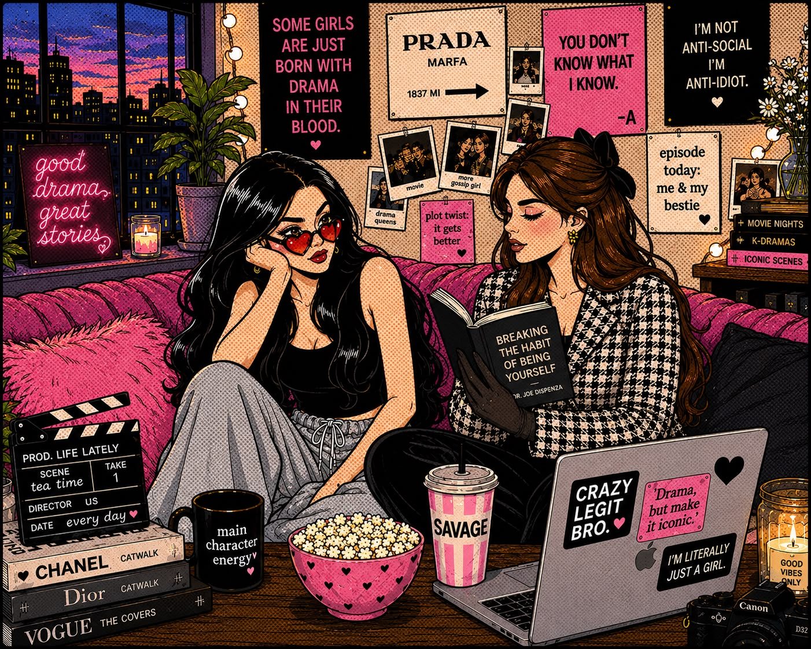
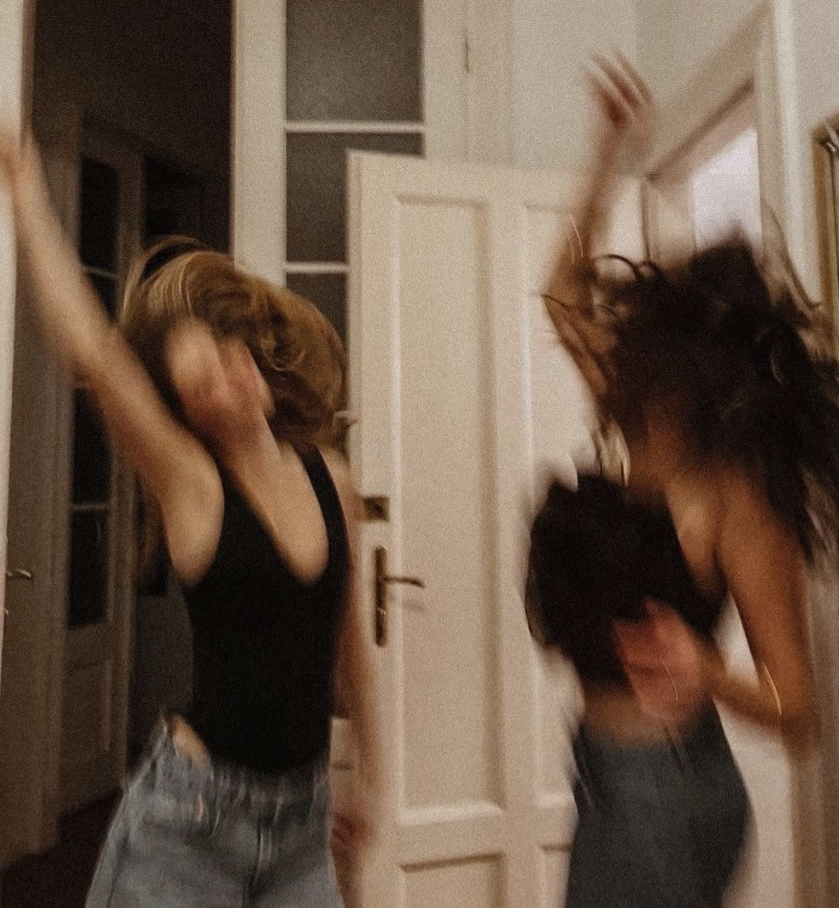
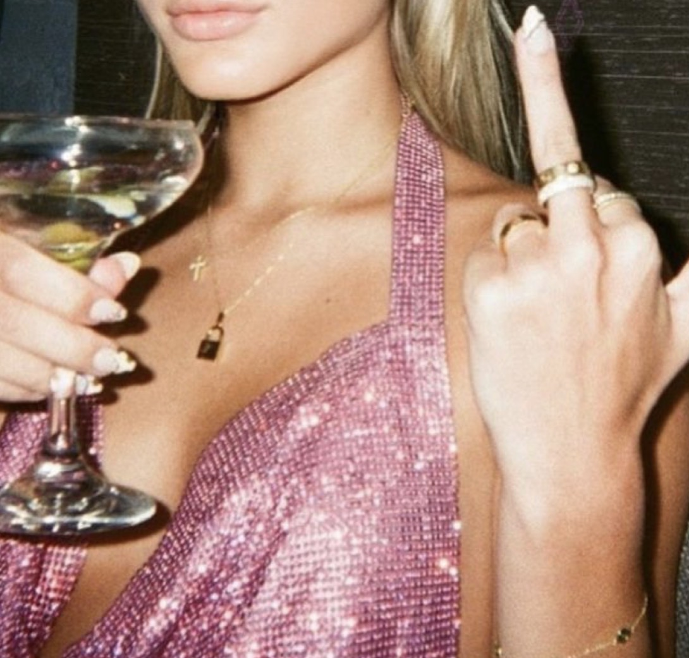

THE INTERNET’S LITTLE AFTER-HOURS HANGOUT
Big opinions.
Little filter.
A little culture. A lot of curiosity. And conversations that definitely could’ve been a voice note.
Enter the rabbit hole ↗Come for the tea. Stay for the plot.
having an opinion.


CURIOUS
★
01 / THE WATCH LIST
Pick your rabbit hole.
Things we’re thinking about.
Future episodes start here.
The channel is taking shape. These are editorial concepts, not published videos.
NO SCROLLING. JUST A LITTLE RESET.
A coffee break
for your brain.
Pick a mood. We’ll leave a thought on your napkin.
02 / MARGIN NOTES
For the overthinkers.
A quieter corner.
Longer thoughts. Less noise.

a little attitude is allowed.03 / THE LORE
Hi, behen.
Pull up a chair.
Behen DeCode is a YouTube channel in the making — and this is its little home on the internet.
A place for culture, ideas, and all the conversations that don’t fit neatly into one category. Curious, a little sarcastic, and always up for a good coffee.
Stay curious. Stay extra. ♡